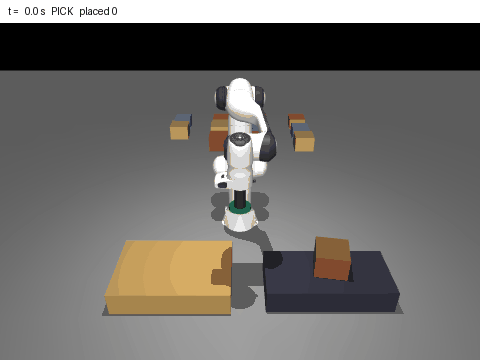
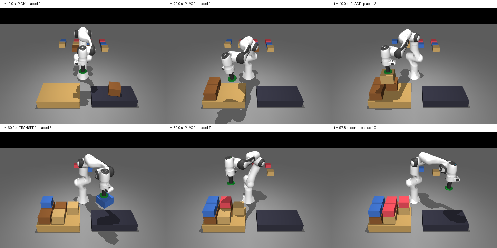
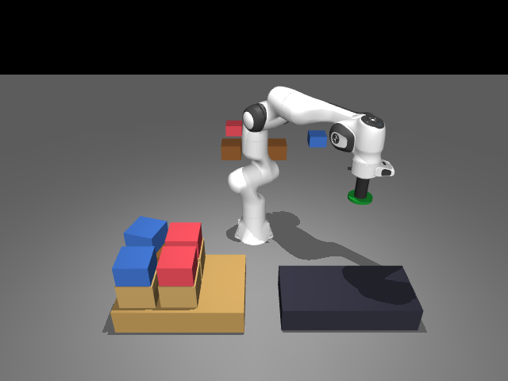
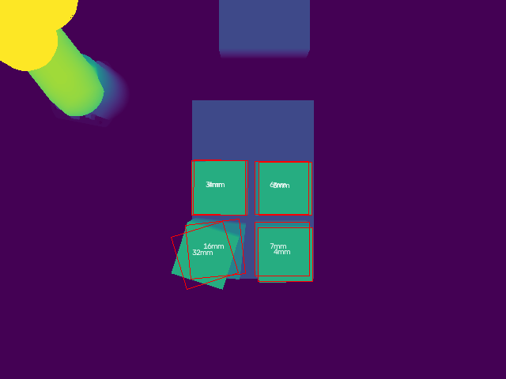

A Franka Panda with a vacuum tool picks four kinds of cases. A state machine runs every pick and place, a rule-aware planner decides where each case goes, a depth camera measures how each case landed, and a small learned model warns before risky grasps.
Cases differ in size, weight and how much load they can carry on top. Heavy cases must go low and fragile ones high, and each layer must be flat for the next. A suction cup that lands a centimetre off centre can peel a heavy case off mid-move, and every move over the growing stack can knock a case that is already placed.
Crush limits, heavy-on-light and uneven layers are rules a planner can break without anyone noticing until the pallet leans.
Seal, lift, carry and release: each step can drop or knock a case, and a fully correct pallet needs every step to work.
Pallets fully correct, drops by cause, cases knocked, placement error from the camera, rule violations.
A hardware result. The vacuum is a model, cases appear at the pick spot, and there is no conveyor physics.
Every run uses seed 0: 434 cases ordered, 11 of them missing on purpose.
A greedy rule-aware planner puts heavy and strong cases low, respects each case's crush rating, keeps layers flat, and replans around a missing case without moving placed ones.
A 6-32-32-1 network sees the measured pad offset, case mass, size and pad overlap. A risky pick goes to RETRY with a new pad position instead of PICK.
The seal needs pad contact and at least half the pad on the case. Every step compares pull force and peel torque with vacuum capacity. The arm lifts above the stack top, moves across, and descends straight down.
A height map, OpenCV contours and a plane fit give each case's centre, yaw and tilt, then placement error, gaps to neighbours and layer flatness.
Every transition is checked and logged to JSONL.
The planner and the first-fit baseline are scored the same way.
Pull or peel, logged at the step it happens.
The same 50 randomized pallets in every run: random case mix, pick pose noise, pad positioning error σ 12 mm, vacuum level 0.8–1.05, and a missing case in about 30% of pallets.
Each row on its own scale; values as labelled. Grasp model on in both.
Same v2 motion. Held-out accuracy is on 90 curated picks.
Counted by one rule checker; bar length to 149.
| Measure | Result | Reading |
|---|---|---|
| Cases placed and found by the camera | 409 / 409 | 0 not found in v2 |
| Placement error from depth | 4.76 mm | mean; p95 7.17, max 7.31 |
| Grasp-model flags | 52 | risky picks sent to RETRY |
| Why v2 pallets failed | 13 + 1 | peel drops; one unreachable IK target |
| Simulated time per pallet | 93.7 s | mean over 50 pallets |

results/eval_pallets.jsonl. One frame per 0.5 s of simulated time. Made by render_pallet_gif.py.

render_pallet.py.
render_pallet.py.It also carried the pad pressing down on the case, so every pick looked like a drop. The holding check now uses F = m(a − g) and the peel torque from the case's own acceleration.
In v1, joint moves between waypoints swept carried cases through 2–3 cm gaps and knocked 32 cases. Lifting straight up above the stack top first took the cell from 22 to 36 correct pallets.
A level 20-waypoint transfer gave acceleration spikes and 37 drops in about 8 pallets. It was dropped for a single smooth joint move at the safe height.
0.956 against 0.700 held-out, and 36 drops down to 13 in the full evaluation. It learns this simulator's vacuum model, not a real suction cup.
Holding force is vacuum times sealed area, and drops and grasp labels both come from that model. Pad error is injected and treated as measured. Cases appear at the pick spot; there is no conveyor physics and no collision-aware planner.
Lower transfer acceleration for heavy cases or a seal check after contact, retrain the grasp model on v2 picks, run the offset rule as the gate, and separate vision error from true placement error.
export MUJOCO_GL=egl python build_scene.py # scene/cell.xml python grasp_model.py sweep --n 360 --workers 3 # pick data python grasp_model.py train # grasp model python eval.py --pallets 50 --workers 3 --seed 0 # the 50-pallet eval python -m pytest -q # 9 tests python render_pallet_gif.py # docs/assets/ GIF